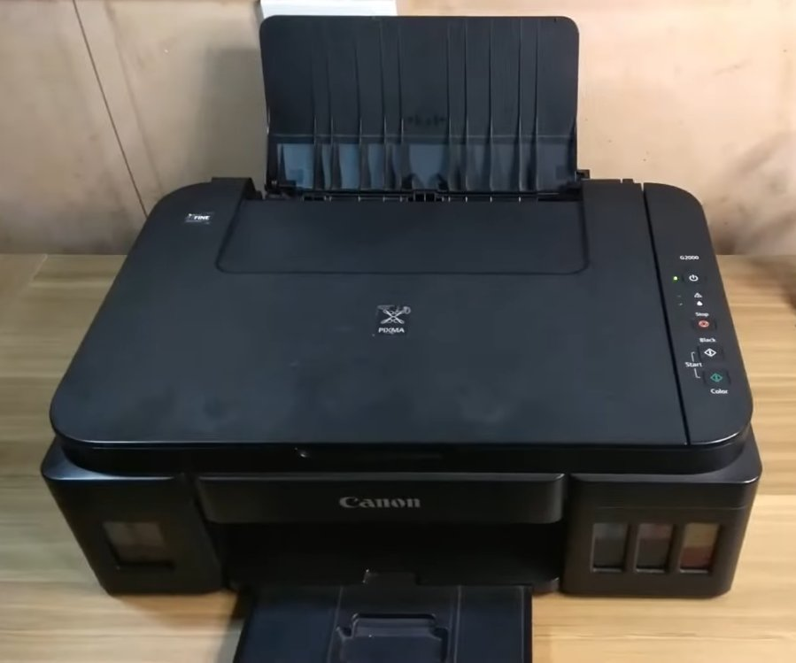
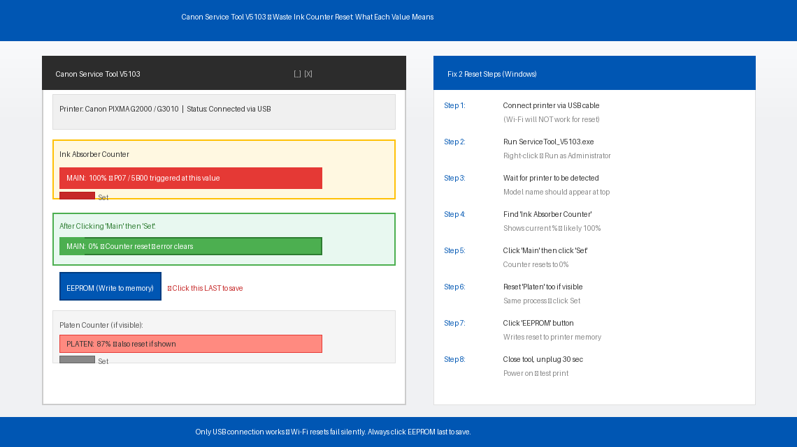
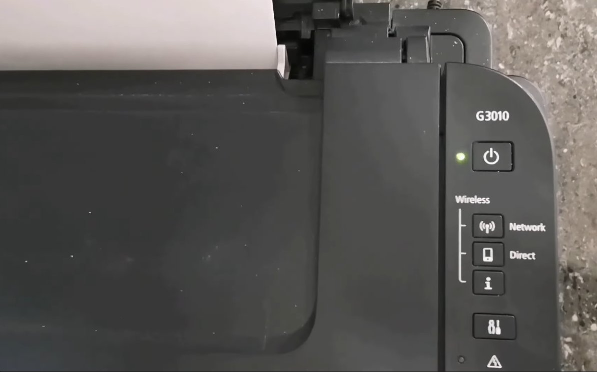
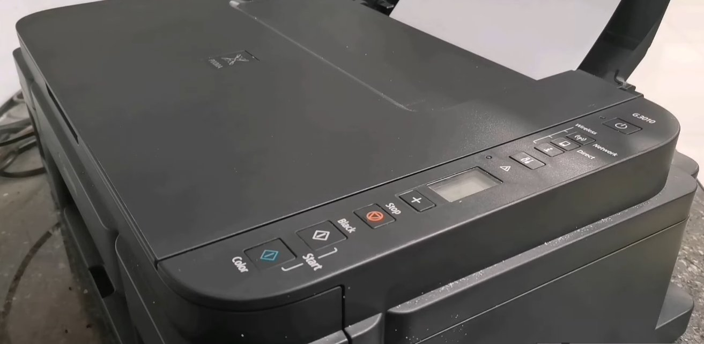
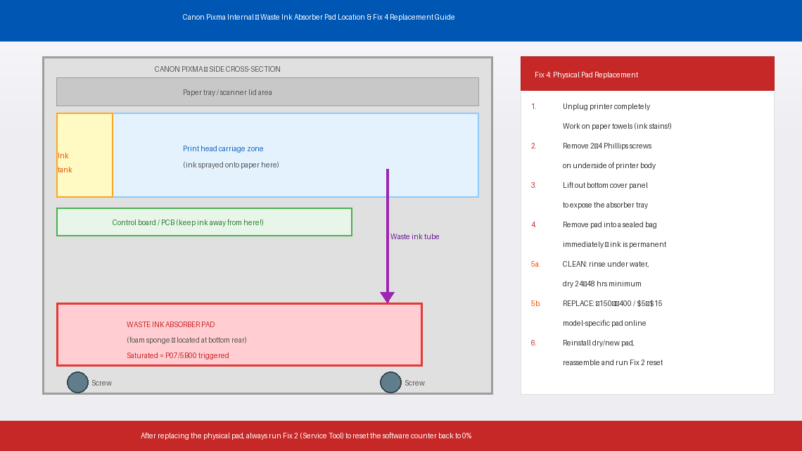
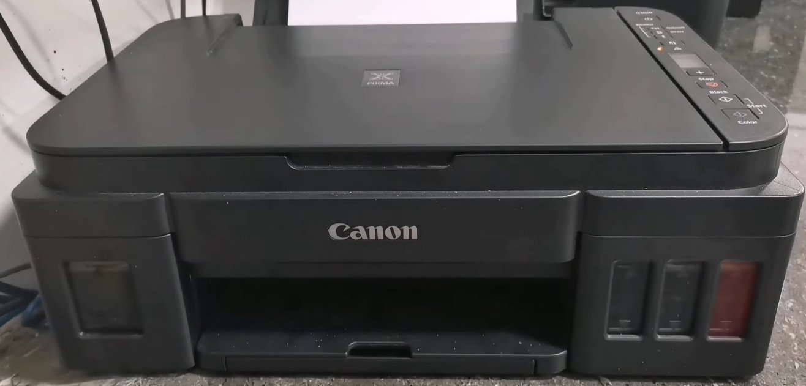

You Hit Print. The Orange Light Started Blinking. Now: P07.
You hit Print, the printer hums to life, and then — nothing. The orange light starts blinking, your computer throws up an error window, and your Canon Pixma displays either P07 or 5B00 depending on the model. The printer refuses to do anything at all. No printing, no scanning, no copying. Completely locked up.
You’ve changed the ink cartridges recently. The paper tray is full. Everything looks fine from the outside. So why is your printer acting like it’s been condemned?
Here’s what you need to hear: your printer isn’t broken. It has deliberately locked itself because it believes a small internal sponge — one you’ve probably never heard of — has reached its maximum capacity. And it won’t unlock itself without a manual reset.
The good news is that this reset can be done at home, for free, in about ten minutes. Millions of Canon Pixma users have done it. This guide walks you through exactly what the error means, how to reset it properly, and what to do if the reset doesn’t hold.
What Do Error P07 and 5B00 Mean on Canon Pixma?
In plain English, P07 and 5B00 both mean the same thing: Canon’s firmware believes the ink absorber — an internal waste ink pad — is completely full and needs to be replaced or reset.
Every Canon Pixma inkjet printer has one or more small sponge pads made of foam or felt, tucked into the base of the printer. These pads are called waste ink absorbers, and their entire job is to soak up excess ink. This excess comes from three sources: ink flushed through the print head during automatic cleaning cycles, ink used during head alignment prints, and any ink that overshoots the paper during borderless printing.
Over months and years of use, these pads slowly absorb more ink. Canon’s printer firmware tracks this accumulation using an internal counter called the waste ink counter. When this counter hits 100%, the printer throws P07 or 5B00 and locks itself completely.
The critical thing to understand is: the counter is a software number, not a physical measurement. The actual pad may not be fully saturated — Canon sets the limit conservatively, well below the pad’s true capacity, as a safety margin. This is why resetting the counter often gives the printer perfectly functional service for months or years more. However, the pad is genuinely accumulating ink — if it eventually overflows, waste ink can drip onto internal circuitry and cause real damage.

Tools You’ll Need
You won’t need everything for every fix — but having these within reach saves trips mid-repair:
- A Windows or Mac computer with a USB cable (for the software reset tool)
- Internet access to download Canon Service Tool V5103
- Paper towels and rubber gloves (if cleaning the physical pad)
- A Phillips head screwdriver (only if physically replacing the pad)
- About 10–20 minutes of your time
Step-by-Step Fixes (Easiest to Hardest)
Work through these in order. The majority of users are fully up and running after Fix 1 or Fix 2. Only proceed further if the error returns quickly after resetting.
Before downloading anything, try a basic power cycle. P07 or 5B00 occasionally appears as a one-time trigger — particularly after a power interruption mid-print — and a clean reset clears it without any further action.
- Press the printer’s Power button to turn it off.
- Once the power light is completely off, unplug the printer from the wall socket — do not leave it on standby.
- Wait a full 5 minutes.
- Plug the power cable back in and turn the printer on.
- Attempt to print a test page.
If the error is gone and the printer prints normally, monitor it over the next few sessions. If P07 or 5B00 returns within a print or two, the waste ink counter is genuinely at its limit and needs a software reset — continue to Fix 2.
This is the definitive fix for P07 and 5B00. Canon provides a free official service tool — Canon Service Tool V5103 (also called ST-V5103) — that connects to your printer via USB and resets the waste ink counter back to zero. It is the same tool used by Canon’s own authorised service centres.
On Windows:
- Download Canon Service Tool V5103 — search for “Canon Service Tool V5103 official download” and verify the source carefully before downloading.
- Extract the downloaded ZIP file to a folder on your desktop.
- Connect your Canon Pixma to your computer via USB cable. The reset tool does not work reliably over Wi-Fi — use a direct USB connection.
- Make sure the printer is powered on and showing the P07 or 5B00 error.
- Open the extracted folder and run ServiceTool_V5103.exe — right-click it and select “Run as administrator” for best results.
- The tool will automatically detect your connected Canon printer.
- Find the “Ink Absorber Counter” section. You will see a current counter value — likely at or near 100%.
- Click “Main” under the Ink Absorber section, then click “Set” to reset the main waste ink counter to zero.
- If your model also shows a “Platen” counter, reset that too using the same process.
- Once the counter shows 0%, click the “EEPROM” button if present to write the reset value to the printer’s permanent memory.
- Close the tool, turn the printer off, unplug it for 30 seconds, then power it back on.
- Print a test page — P07 or 5B00 should be gone.
On Mac: The Canon Service Tool is Windows-only. Mac users can use a Windows PC with the USB cable, or try the free wic Reset Utility (the free trial allows one counter reset) — search for it by name and verify the source carefully.

If you don’t have access to a Windows computer, several Canon Pixma models support a manual hardware reset sequence that can clear P07 or 5B00 using only the printer’s buttons. This method varies by model and does not work on all Pixma units — but it’s worth trying before searching for a PC.

For Canon Pixma MG and MX series (most common method):
- With the printer powered off, press and hold the Stop/Reset button (the red circle with a triangle inside it).
- While holding Stop/Reset, press and hold the Power button.
- Continue holding Power and release the Stop/Reset button.
- While still holding Power, press Stop/Reset 5 times in quick succession.
- Release the Power button. The printer should enter service mode — the display may flash or show dashes.
- Press Stop/Reset 2 more times, then press Power once to confirm.
- The printer will restart and the P07 / 5B00 error should be cleared.
Note: The exact button sequence varies between Pixma models. If this sequence doesn’t match your model’s behaviour, search for your specific model number plus “service mode reset sequence” to find the correct combination. Canon Pixma IP, IX, and TS series models use different sequences.

Resetting the software counter addresses the error code, but it does not change the physical state of the ink pad. If your printer has been in heavy use for several years and the reset keeps triggering quickly, the pad may be genuinely saturated and approaching the point where it could overflow. Cleaning or replacing the physical pad eliminates the root cause rather than just resetting the warning.
- Unplug the printer and place it on a protected surface with several layers of paper towel underneath.
- Remove the printer’s bottom cover — on most Pixma models, it is held by 2–4 Phillips screws on the underside. Keep the screws safely together.
- Locate the waste ink absorber pad — a rectangular or irregular piece of dark grey or black sponge foam, usually sitting in a dedicated tray at the bottom rear of the printer body. It will be visibly ink-stained, ranging from dark blue to black depending on ink usage.
- Remove the pad carefully — it lifts out of its tray. Place it immediately into a sealed plastic bag to contain the ink.
- You have two options:
- Clean and reuse: Rinse the pad under running water, squeezing gently until the water runs clear. Allow it to dry completely — at minimum 24–48 hours — before reinstalling. A damp pad will spread ink onto internal components.
- Replace: Purchase a replacement pad for your specific Pixma model — available online for approximately ₹150–₹400 (India) or $5–$15 (US). Generic pads can be trimmed to fit.
- Reinstall the dry or new pad in the tray, reassemble the bottom cover, and tighten all screws.
- Perform the software reset (Fix 2) to reset the counter after the physical pad has been replaced.


When to Call a Professional
P07 and 5B00 are among the most DIY-friendly Canon error codes, but there are situations where professional help makes more sense:
- The error returns within a few print jobs after resetting the counter. This means the physical pad is genuinely saturated and possibly overflowing — and depending on how long this has been happening, waste ink may already have reached the circuit board. A technician can assess whether the board has been damaged before you invest more time in the printer.
- You see ink dripping or pooling under the printer. Stop using the printer immediately. This is the physical pad overflowing — continuing to print risks permanent damage to internal components. Unplug it and take it to a service centre.
- The printer shows P07 or 5B00 immediately after a fresh reset, before printing a single page. This indicates the counter reset did not write correctly to the printer’s EEPROM memory — either the reset tool didn’t save properly or the printer’s memory chip has developed a fault.
- Your printer is still under Canon’s warranty. Canon’s standard warranty is 1 year from purchase for most Pixma models. Resetting the service counter yourself does not void the warranty, but physically opening the printer body to modify internal components might. If the printer is under a year old, contact Canon support before attempting Fix 4.
To reach Canon support in India: in.canon/en/support or call 1800-180-3366 (Monday to Saturday).
In the US: usa.canon.com/support or call 1-800-652-2666.
Have your printer’s model number and purchase date ready when you call.
Quick Summary
| Fix | Difficulty | Time Needed |
|---|---|---|
| Power reset (unplug for 5 minutes) | Very Easy | 5 minutes |
| Reset counter via Canon Service Tool V5103 | Easy | 10 minutes |
| Manual button reset sequence (no PC) | Easy | 5 minutes |
| Clean or replace the physical absorber pad | Moderate | 30 min + 24hr drying |
Start at the top. For most people, Fix 2 — running the Canon Service Tool and resetting the counter to zero — has the printer back in action in under ten minutes. Fix 4 is the responsible follow-up if you want to address the physical pad before it becomes a real problem, but it can wait until you have the time and a replacement pad in hand.
Cleared P07 or 5B00 with this guide? The counter reset buys you more time, but Fix 4 is the one that permanently fixes the underlying cause — especially if your Pixma is three or more years old and in daily use. Do both, and you’ll get another few years out of a printer that most people throw away unnecessarily.